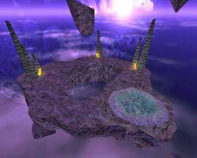

Game Half-Life merupakan sebuah seri permainan komputerTembak-menembak orang pertamaFiksi ilmiah, yang terbagi dalam 2 permainan penuh, 2 permainan episodik, 3 permainan berasing dan demo-demo. Seri ini aktif dari 1998. Semuanya dikembangkan oleh Valve Corporation dan Gearbox Software dan diterbitkan oleh Sierra Studios dan selanjutnya Electronic Arts dari 2005 sampai saat ini. Seri yang dirilis untuk PC, tetapi versi konsol yang juga dirilis.
Karakter Game
Protagonis seri Half-Life ialah Dr. Gordon Freeman, fisikis teoretikal dalam Black Mesa Research Facility.
Dr. Gordon Freeman Ph.D, berasal dari Seattle, Washington, Freeman menunjukan minat dan bakat yang tinggi di bidang fisika kuantum dan relativitas pada usia yang sangat muda. Pahlawannya yang paling awal adalah Einstein, Hawking dan Feynman. Saat menjadi mahasiswa tamu di Universitas Innsbruck pada akhir 1990-an, Freeman mengamati serangkaian percobaan teleportasi mani yang dilakukan oleh Institut Fisika Eksperimental, setelah melihat itu, Teleportasi menjadi obsesinya. Pada Tahun 1999, Freeman menerima gelar doktor dari M.I.T. dengan Skripsi berjudul: "Observation of Einstein-Podolsky-Rosen Entanglement on Supraquantum Structures By Induction through Nonlinear Transuranic Crystal of Extremely Long Wavelength (ELW) Pulse from Mode-Locked Source Array."
Kecewa dengan lambatnya langkah dan pendanaan penelitian akademis yang buruk, dan dengan masa jabatan impian yang jauh, Gordon mencari pekerjaan di Industri Swasta, Sebuah Keberuntungan, Mentornya di M.I.T., Profesor Alex Kleiner, telah mengambil alih proyek penelitian yang dilakukan di pangkalan Rudal yang dinonaktifkan di Black Mesa, New Mexico. Kleiner sedang mencari beberapa rekan yang cerdas, dan Gordon adalah pilihan pertamanya. Mempertimbangkan sumber dan jumlah dana yang tersedia untuk Black Mesa Labs, Gordon menduga bahwa dia akan terlibat dalam semacam penelitian senjata; tetapi dengan harapan bahwa aplikasi sipil praktis akan muncul (dalam bidang Komputasi Kuantum dan Astrofisika), Dia pun menerima Tawaran dari Kleiner.
Latar Tempat dan Waktu
Serial Half-Life itu mula pada tahun 1998, Ia (Dr. Gordon Freeman) bekerja di Pada Suatu Tempat yang bernama Black Mesa Research Facility fiktif di sebuah fasilitas New Mexico, yang melakukan penelitian Nuklir, Subatom, dan Kuantum.
Latar Tempat
Alur Cerita
Pada Suatu Hari Dr. Gordon Freeman, seorang fisikis teoretikal, dia melibatkan diri dalam eksperimen menganalisis artifak kristal tidak dikenali
Kristal Tidak Dikenali
dan pada saat itu dia terlambat untuk datang bekerja, pada saat itu Pihak Black Mesa ingin menyelenggarakan Eksperimen tersebut, dia masuk Ke Black Mesa Melalui Tram yang di sediakan oleh tempat tersebut, lalu sampai pada tujuannya, dia di dampingi oleh Satpam/Penjaga yang ada di Black Mesa itu untuk masuk kedalam tempat tersebut, setelah itu Freeman menggunakan Pakaian yang bernama Hazardous Environment Suit (H.E.V Suit).
H.E.V Suit
Setelah Menggunakan Pakaian Tersebut, Freeman Langsung menuju ke ruang Percobaan yang bertempat Di Material Anomali sector C di Fasilitas tersebut, lalu dia masuk ke Ruang Material Anomali sector C tersebut.
Ruang Material Anomali Sector C
Ketika Freeman Sudah Masuk Keruangan itu sendirian, dan orang (ilmuwan) yang berada diluar menyalakan mesin yang mengeluarkan cahaya spektrometer (Anti-Massa), lalu setelah semuanya Siap, Freeman disuruh untuk mendorong Kristal yang berada di Troli Ke Cahaya Spektrometer itu (Untuk Menganalisa). Apabila cahaya spektrometer menghantam kristal itu maka terjadi sebuah Ledakan, dan tiba-tiba ada suatu ledakan yang tak dapat di atasi, ia menyalip dimensional di antara Black Mesa dan selagi alam semesta (Membuka Portal Dimensi Bumi dengan Xen), menyebabkan kehidupan ekstradimensional (Dimensi Alien bernama Xen) menyerang Black Mesa dan menewaskan Pegawai dan staf di area itu.

Dimensi-Dimensi (Planet) Xen
akan tetapi ada yang masih selamat dari kejadian itu, dan Si Karakter Kita (Freeman) seketika itu (saat Terjadi Ledakan) dia mengalami Pingsan dan Terbawa Ke Dimensi Lain (Xen) di dalam mimpi pingsannya, setelah Bangun dari Pingsan, Freeman keluar dari ruang Uji Coba Tersebut, dan Mencari ilmuwan lain, Para orang yang selamat dari kejadian itu memberitahunya bahwa beberapa komunikasi dengan dunia luar terputus dan terdesak. Freeman harus berjuang dengan caranya sepanjang Black Mesa, melindungi dirinya sendiri terhadap musuh Makhluk-makhluk Xen
Setelah berkeliling untuk menemukan solusi, Tiba-tiba Unit Marinir datang untuk menyerang dan membunuh orang-orang yang ada di Black Mesa untuk menutupi kejadian ini (Clear), setelah Freeman sampai diluarnya Black Mesa, Freeman Mempelajari bahwa para Ilmuwan yang ada di Lambda Reactor Complex menemukan cara untuk menutupi Portal atau Rift (celah) Dimensional tersebut. Lalu pun Freeman Pergi ke menuju ujung fasilitas lainnya untuk membantu mereka, Sepanjang jalan, dia mengaktifkan mesin Roket tes fasilitas untuk menghancurkan makhluk Tentakel raksasa (Tencakle) dan menggunakan jalan rel yang tidak digunakan sistemnya untuk meraih dan meluncurkan Roket Satelit. Singkat cerita, sesudah dia ditangkap oleh para Unit Marinir dan ditinggal mati di dalam gudang Pemadat, dia berhasil selamat dan pergi menuju bagian fasilitas tertua. Dimana dia menemukan spesimen-spesimen Xen yang dikumpulkan sebelum resonasi kaskade. Kewalahan oleh para Alien, para unit Marinir menarik diri dari Black Mesa dan memulai serangan Udara. Setelah itu berlalu, Freeman datang lagi ke Lambda Complex, dimana para ilmuwan menciptakan Teknologi Teleportasi menuju Planet Xen.
Seorang Staff memberitahu Freeman bahwa Satelit tersebut gagal untuk membalikkan efek resonasi kaskade. Karena ada makhluk yang kuat dari dimensi lain yang membuat rift (celah) tersebut tetap terbuka. Lalu para ilmuwan mengaktifkan teleportasi untuk mengirimkan Freeman ke Xen untuk menghentikan Makhluk tersebut. Di Xen, Gordon bertemu dengan para sisa-sisa peneliti yang mati sebelum dia, sepanjang jalan dan mengalahkan Gonarch (Laba-Laba Alien Raksasa), saat di pabrik pembuatan pasukan Alien, Freeman mengalahkan makhluk-makhluk melayang (Alien Controller) dan memasuki portal raksasa. Di Gua yang luas setelah memasuki Portal tadi, Freeman berhadapan dengan Nihilant, yang menahan celah yang menyatu lalu Freeman menghancurkan makhluk tersebut. Setelah Berhasil Mengalahkan Nihilant, Freeman mengalami Pingsan, Lalu dibangunkan oleh G-Man yang misterius, lalu setelah G-Man berbicara banyak kepada Freeman, G-Man pun membawa Freeman ke Kereta Tram yang pertama kali pada awal ia ini pergi ke Black Mesa dengan Suasana yang berbeda dari alam nyata. Lalu G-Man menawarkan Pekerjaan kepada Freeman, jika Freeman terima, G-Man memberi selamat pada dia dan menempatkan dia ke Stasis (Fase Tidur yang sangat lama), jika Freeman menolak, maka dia dipindahkan ke area yang penuh dengan Alien dan mati. Freeman pun menyetujui tawaran tersebut dan memasuki portal yang disediakan oleh G-Man dan memasuki Fase Stasis tadi. Dan di Ending Game ini, Freeman Menunggu Tugas dari Si Misterius G-Man.


")
{kind=link}